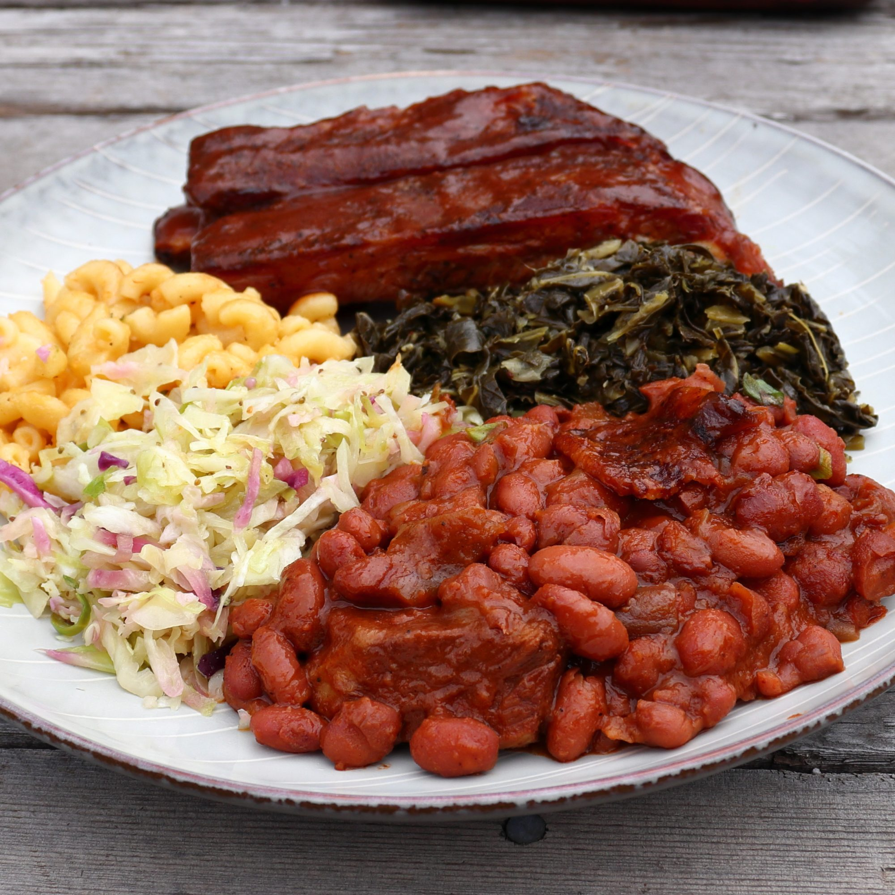

Barbecue Baked Beans

The Best Barbecue Baked Beans
It's not a real barbecue until a dish of baked beans shows up! While there are many different versions and many different techniques, I'm here to tell you that these are the best. These are the tastiest, most satisfying, the easiest, and the meatiest. They not only make a great side dish, but if the budget's a little tight, these will absolutely work as a main course. Sprinkle the top with sliced green onion if you like.
Ingredients
- 1 pound dried red beans
- 3 quarts water
- 1 bay leaf
- 1 ½ pounds boneless pork shoulder, cut into 2-inch cubes (Optional)
- 1 yellow onion, chopped
- 1 cup barbecue sauce
- ½ cup ketchup
- ⅓ cup apple cider vinegar
- ¼ cup packed light brown sugar
- 3 tablespoons molasses
- 2 tablespoons yellow mustard
- 1 teaspoon Worcestershire sauce
- 1 tablespoon smoked paprika
- ⅛ teaspoon cayenne pepper
- 1 teaspoon freshly ground black pepper
- 1 tablespoon kosher salt
- 1 teaspoon garlic powder
- 2 ½ cups reserved bean cooking liquid
- 6 slices thick-cut bacon
How to make Barbecue Baked Beans
- Step 1: Add dry beans to a bowl, cover with water, and let soak for 8 hours, or overnight.
- Step 2: Drain beans and transfer to a large pot filled with 3 quarts of cold, fresh water. Add bay leaf, pork shoulder, and onion. Bring to a simmer over high heat. Reduce heat to medium-low and stir. Skim off foam if desired. Let simmer until beans are just tender, about 1 hour.
- Step 3: While beans simmer, combine barbecue sauce, ketchup, vinegar, brown sugar, molasses, mustard, Worcestershire, smoked paprika, cayenne, black pepper, kosher salt, and garlic powder in a bowl with a whisk. Set aside until needed.
- Step 4: Preheat the oven to 350 degrees F (175 degrees C).
- Step 5: Transfer tender bean mixture to a deep, 15x10-inch baking dish using a spider strainer. Pour in barbecue sauce mixture and 2 ½ cups of the bean cooking liquid. Place bacon slices on top.
- Step 6: Bake uncovered in the center of the preheated oven until the liquids have reduced into a thick sauce, 2 to 3 hours.
Back to the home page